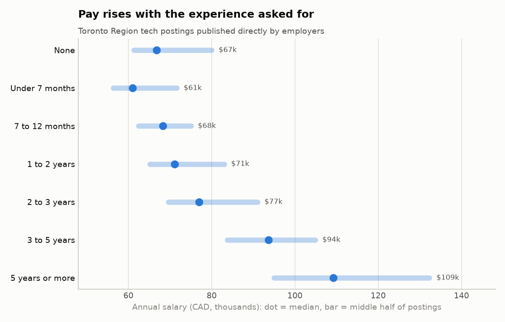
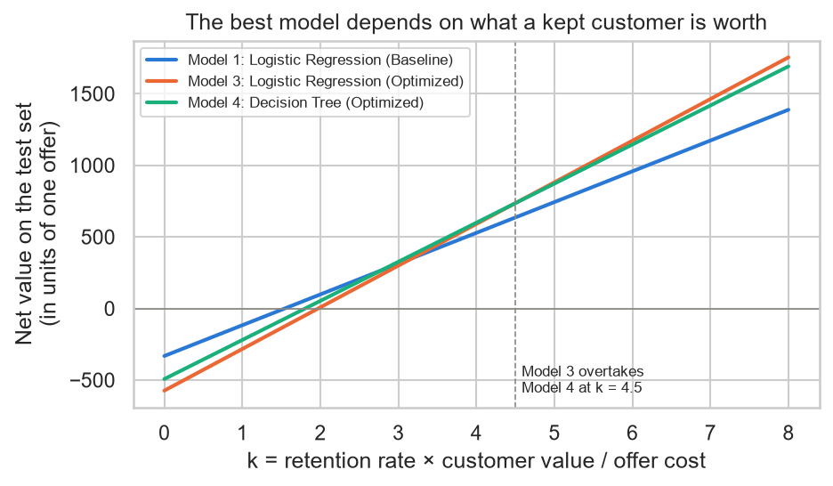

Software engineer building practical AI applications.
I'm Jonathan, a Master of Computer Science (Applied AI) student based in Toronto, with a
background in deep learning research for medical imaging. I care about AI that is
explainable, measured honestly and engineered to last: clean code, tests and CI.
Looking for Software Engineer, ML Engineer and AI Engineer roles.
Explainable resume-to-job matching with NLP skill extraction and gap analysis.
Applicant tracking systems score resumes without saying why. JobLens makes the
comparison transparent: it extracts skills from both documents, separates a posting's
required skills from its nice-to-haves, and shows exactly which gaps cost you points.
Symbol-aware extraction over a curated taxonomy of ~100 tech skills, plus an implication graph (FAISS counts as Vector Databases)
Parses required vs. preferred requirements, including Canadian phrasing such as "is an asset", and treats "Power BI or Tableau" as one requirement either skill meets
Pluggable similarity: TF-IDF or sentence-transformer embeddings, chunked to fit the model's token limit
Batch mode ranks a folder of postings and lists the skills missing most often across them
0.00 → 0.38Similarity of a paraphrase with no shared words: TF-IDF vs. embeddings
Python
NLP
scikit-learn
Hugging Face
sentence-transformers
pytest
GitHub Actions
Source code →119 tests · CI on Python 3.10–3.12 · versioned releases
Lung Nodule Detection
v0.7.0 · First results
Rebuilding my thesis in the open with a stricter, scan-level evaluation.
My thesis evaluated nodule detection mostly per 2D slice, which lets near-identical
neighbouring slices leak between training and test sets. This reimplementation splits
data by scan using LUNA16's official subsets and measures false positives per scan, as
the LUNA16 challenge does. The result is lower than the thesis's 88.0%, as expected,
and it is the honest one.
Scan-level FROC/CPM validated against the official LUNA16 evaluation: identical sensitivities on the challenge's sample submission
CT preprocessing, splits by LUNA16 subset, and 2D-to-3D merging of slice detections
Trained YOLOv5s on a free Kaggle GPU and tested once on 88 held-out scans, with a bootstrap confidence interval
Error analysis by nodule size: 100% of nodules of 20 mm or more are found at one false positive per scan, but only 69% of those under 6 mm, which account for most misses
Built a 2.5D input that stacks neighbouring slices as color channels to target small nodules, plus early stopping for the overfitting seen after about 35 epochs; the comparison run is next
74.7% CPMOn 88 held-out LUNA16 scans, false positives counted per scan (95% CI 69.0–80.1%). Finds 80% of nodules at one false positive per scan.
Python
NumPy
YOLO
Medical imaging
Computer vision
pytest
Source code →167 tests · metric checked against the official challenge code
Toronto Tech Job Market
Live dashboard
SQL analysis of a year of official Job Bank postings: who is hiring in tech, what they pay and how demand moves.
A DuckDB pipeline turns twelve monthly government files into a clean, typed SQL view.
Real open data is messy: the files are UTF-16, their columns change over time, one header
has a double space and salaries arrive in six different units. Each issue is handled and
documented before any figure is reported.
Discovers and downloads monthly files through the open.canada.ca CKAN API
SQL staging view that types every column and converts pay in six units to an annual salary with documented rules
Explicit tech occupation list, since a code-prefix filter would also count architects and urban planners
Documented rules for implausible salaries and for ads repeated in several cities, then eleven analysis queries and a generated report
Caught a hidden bias: 27% of Toronto salaries are occupation-wide template ranges from external job boards, so salaries are also compared on direct employer postings, where Toronto's lead shrinks
A plain-language notebook answers five questions a job seeker would ask, from where the jobs are to how pay grows with experience
Compared Toronto with Canada's next largest tech regions: four times the postings of any other, but in direct employer postings Ottawa pays more ($84k vs. $80k)
Interactive dashboard on GitHub Pages: filters by period, family and source and compares Toronto with any major tech hub, with every median computed in the browser by the same rules as the SQL and checked against it
$67k → $109kMedian Toronto tech salary, from roles asking no experience to 5+ years (direct employer postings, Nov 2025 – Oct 2026)

Generated by the project's own report command from the SQL queries.
Predicting which telecom customers will leave, and choosing the model from business costs instead of F1 alone.
A group assignment from my master's Machine Learning course, which I then revised to
address the instructor's review. Four scikit-learn models are compared on 1,409 held-out
customers. Instead of declaring a winner by F1, a cost analysis shows which model pays
off depending on what a retained customer is worth.
Found and removed target leakage: IBM's own churn score, customer lifetime value and churn reason are model outputs or known only after a customer leaves
Scaling and encoding inside a scikit-learn Pipeline, so cross-validation never sees the test set, and class weighting for the 26.5% churn rate
Cost-sensitivity analysis with break-even points: the recommended model depends on one ratio, retention rate × customer value / offer cost
Explains the recommended Logistic Regression itself, with odds ratios, permutation importance and a surrogate tree that matches 92.1% of its decisions
A script run in CI checks that every number in the text appears in the notebook outputs
0.848 ROC AUCRecommended model on 1,409 held-out customers, flagging 78% of those who churned

Which model is worth more depends on what a kept customer is worth.
Python
scikit-learn
pandas
Jupyter
Logistic Regression
Decision Trees
Model explainability
Source code →With Juan Davila, Alan Guijarro and Jaime Potes · CI
Research
Lung nodule detection in CT with a multi-channel YOLO representation
B.Eng. thesis · BIVL²ab lab, Universidad Industrial de Santander · 2023
Adapted YOLOv5s to localize lung nodules on CT slices from LIDC-IDRI (1,187 nodules marked
by at least three radiologists). I benchmarked six YOLO variants and ran ablation studies on
detection stages and anchor boxes; co-author Dylan Villalba led the Eigen-CAM explainability
work. Advised by Prof. Fabio Martínez and Prof. Franklin Sepúlveda.
88.0% CPMOn a slice-level test split, with false-positive rates per slice. Re-measured per scan on held-out scans, the reimplementation above reaches 74.7%.
2026 – expected 2028Master of Computer Science in Applied Artificial Intelligence, University of Niagara Falls Canada, Ontario
2025–2026Coursework toward the Advanced Diploma of Information Technology (ICT60220), Albright Institute of Business and Language, Melbourne, Australia. Statement of Attainment for seven units, including network security, network server design and business analysis.
2023B.Eng. Electronic Engineering, Universidad Industrial de Santander, Colombia
Let's talk
I'm interested in software, ML and AI engineering roles in Toronto. The fastest way to reach me is LinkedIn.